Hi there! My name is Thymios!
I am a Senior Research Scientist at Google working on uni- and multi-modal sound separation, speech enhancement, and audio understanding. My research has been published across several publication venues (where I have also been recognized 4× with Outstanding/Highlighted Reviewer awards at NeurIPS, ICML, ICLR, and ICASSP), U.S. and world-wide patents, and super-exciting Pixel-phone features.
I received my Ph.D. in Computer Science from the University of Illinois Urbana-Champaign (UIUC), advised by Prof. Paris Smaragdis, where I was a recipient of the Google Ph.D. Fellowship in Machine Perception, Speech Technology and Computer Vision and UIUC's C.L. and Jane Liu Award. Prior to UIUC, I graduated with a Diploma (B.S. & M.Eng. equivalent, Highest Honors — Top 2%) in Electrical and Computer Engineering from the National Technical University of Athens (NTUA). Previously, I have also conducted research at Google AI Perception, Mitsubishi Electric Research Laboratories (MERL), Reality Labs at Meta (ex-FRL), and Behavioral Signals. For full details, check my academic CV.
My research interests span across multiple areas of audio processing, including the development of efficient neural networks towards generalizable audio and audio-visual source separation capable of running on mobile devices, unsupervised learning directly from mixtures of sounds, and generative audio modeling.
Besides research, I love traveling, playing the guitar, and playing soccer. During summer vacations, I spend most of my time playing beach rackets at the island of Santorini, where I come from. If you like etymology, Thymios derives from the Ancient Greek “Euthýmios (Ευθύμιος)” — “eû (εὖ)” (well) + “thūmós (θῡμός)” (soul, spirit, passion) — meaning “in good spirits, of good cheer”.
Relevant Work Experience
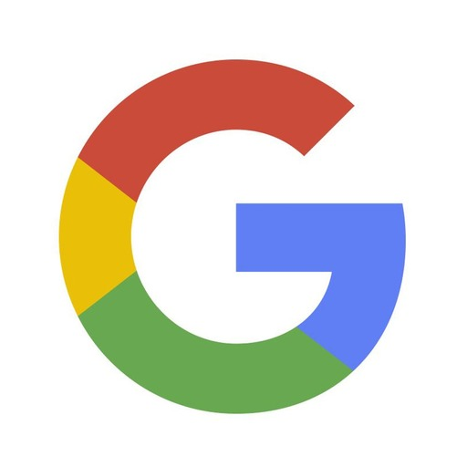
Senior Research Scientist · Google
Cambridge, MA, USA · Nov 2024 – PresentLeading research and a team of researchers and software engineers for the Pixel audio technology engineering team towards next-generation sound restoration models, audio GenAI features, distilled sound separation foundational models, and state-of-the-art ultra-low-latency audio processing models across Pixel's ecosystem.
Research Scientist · Google
Cambridge, MA, USA · June 2023 – Oct 2024Developed Pixel phone audio-visual perception technology with multi-channel information, sound separation and generative modeling for audio processing, and in-the-wild speaker separation with efficient on-device processing.
Student Researcher · Mitsubishi Electric Research Laboratories (MERL)
Cambridge, MA, USA · Sep 2021 – May 2022Designed the first target speech separation system using heterogeneous semantic concepts alongside optimal condition training (OCT) for text-based sound separation.
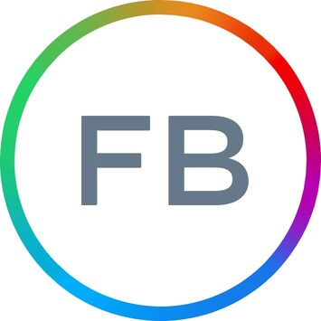
Research Intern · Reality Labs at Meta (ex-FRL)
Redmond, WA, USA · May 2021 – Aug 2021Created RemixIT, the first self-supervised speech denoising method with no in-domain clean speech assumptions for unsupervised test-time domain adaptation and semi-supervised generalization.
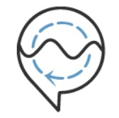
Machine Learning Engineer · Behavioral Signals
Los Angeles, CA, USA · May 2017 – Jul 2018Led machine learning infrastructure framework development and implemented graph-structured pipelines and real-time speech processing models for cognitive-affect recognition, ASR, and speaker diarization.
Education
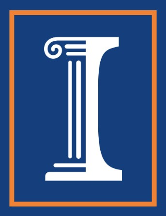
Ph.D. in Computer Science · University of Illinois Urbana-Champaign (UIUC)
Aug 2018 – May 2023Diploma (B.S. + M.Eng.) in ECE · National Technical University of Athens (NTUA)
Oct 2012 – Jun 2018Selected Research Papers
-
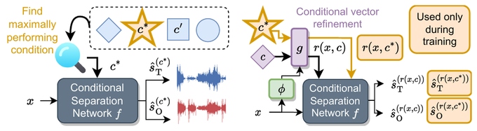
-
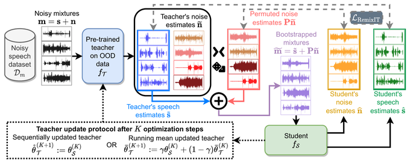
-
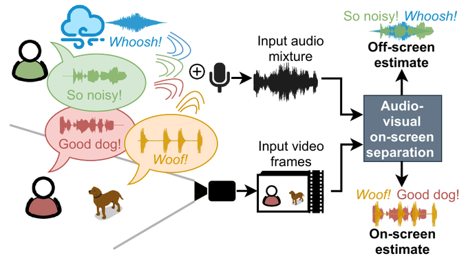
-
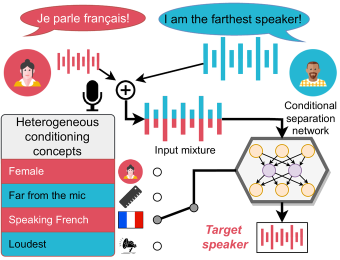
-
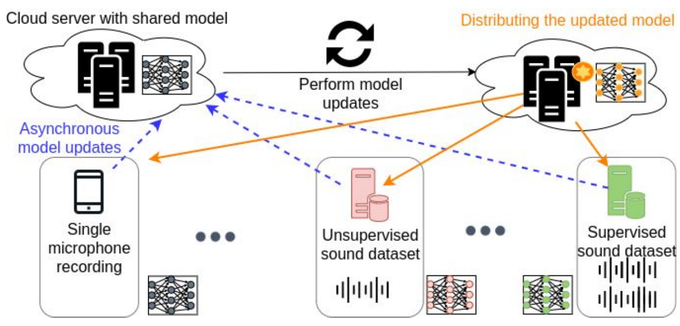
-
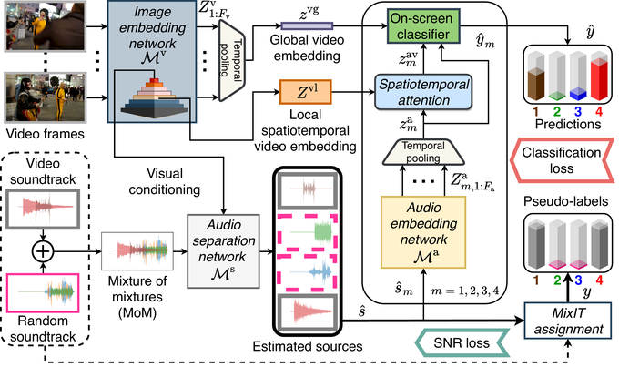
06 Tzinis, E., Wisdom, S., Jansen, A., Hershey, S., Remez, T., Ellis, D. P., and Hershey, J. R., "Into the Wild with AudioScope: Unsupervised Audio-Visual Separation of On-Screen Sounds." In Proceedings of International Conference on Learning Representations (ICLR), 2021. -
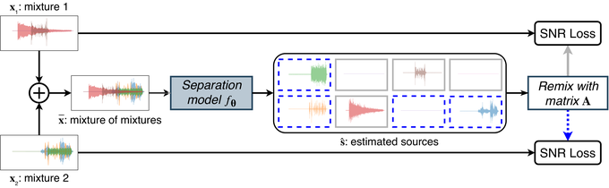
-
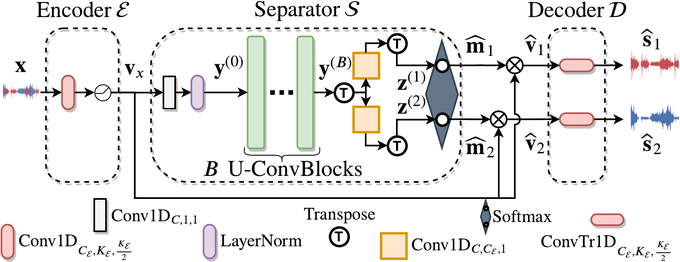
-
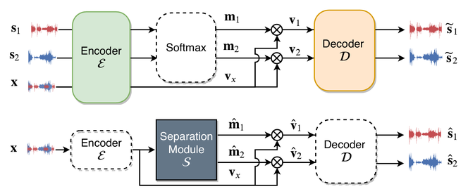
Full publication list available on Google Scholar.
Contact
Always happy to connect regarding research collaborations on audio-visual perception, sound separation, speech enhancement, and generative audio modeling, or to chat about Google Research opportunities.
“We were all born naked and this is how we are going to die.” — Aesop, 620–560 BCE
Efthymios Tzinis © 2026